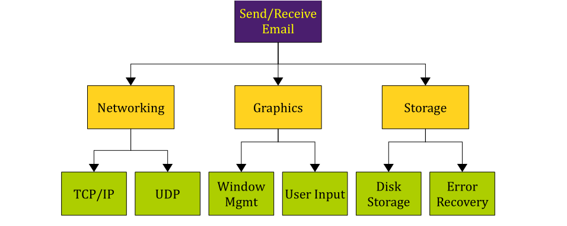
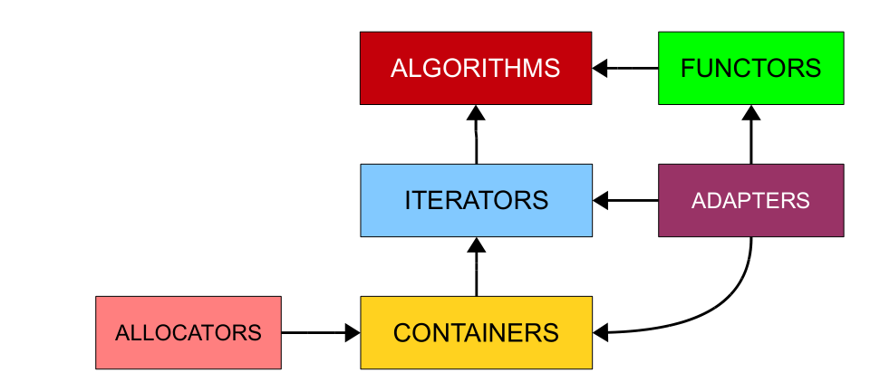
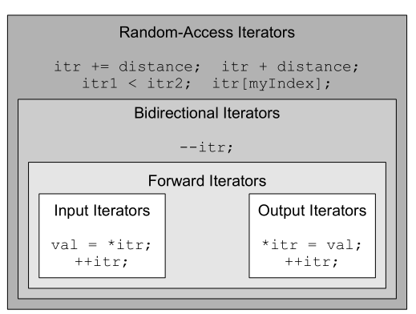

stream
cin buffer不为空时 跳过开始的空白符号
Fail/EOF/Good/Bad
cin fail导致后续所有操作都fail
getline(cin,string,‘\n’)不跳过开始的空白符号,读到\n，不将其读入并且之后的读入跳过他
解决方法cin.ignore()忽略一个buffer中的字符
int getInteger(const string& prompt,const string& reprompt){
while (true){
cout << prompt;
string line;
if(!getline(cin, line)) throw domain_error("..");
istringstream iss(line);
int val;char remain;
if(iss >> val&&!(iss >> remain)) return val;
//not fail&&EOF
cout<<reprompt<<endl;
}
return 0;
}将cin的异常状态和剩余内容清除
cin.clear()
cin.ignore(numeric_limits<streamsize>::max(),‘\n’);
while(true){
int x;
double y;
input>>x>>y;
if(input.fail()) break;
//处理数据
}
while(input>>x>>y)
//同理getline
while(getline(cin,str))
while(!input.fail())//不好 会多处理一组垃圾数据scanf ：读取非char时跳过开始空白符，空白符留在缓冲区
gets：可接受回车键之前输入的所有字符，回车键不会留在输入缓冲区中
stream manipulators endl setw() setfill()
stream随机访问 seekg tellg seekp tellp
多文件编译 预处理
预处理 编译 链接
预处理涉及#include 特殊标记 #define 宏
编译 语法错误（分号 未定义变量 参数传入错误）
链接 建立原型但没有定义的函数

顶部抽象问题依赖于三个子问题，子问题又依赖于更多子问题，顶部不需要知道网络模块如何工作，只需要知道如何使用它
建立file.h时通常 File_Included命名无实际意义
#ifndef File_Included
#define File_Included
//程序的原型
#endif对应的cpp文件#include “file.h”
#define 通过第一个空白字符的位置决定替换内容 添加括号保证表达式出现优先级问题
#if #elif #else #endif只能使用常量 整数值和对应的逻辑算术表达式
defined(MY_CONSTANT)与#ifdef相同
#if 0 #endif删除代码块
macro
#define macroname(parameter1, parameter2, ..., parameterN) macro-body 与C++函数不同，预处理器宏没有返回值，宏的 “返回值 “是它所创建的表达式的结果
inline functions效率比正常的函数要高 无需处理调用
可以将函数标记为inline来建议编译器inline它们
__DATE__ __TIME__ __LINE__ __FILE__
预处理器的字符串化操作符#
#define PRINTOUT(n) cout << #n << " has value " << (n) << endl
int x = 137;
PRINTOUT(x * 42);
//等价于
cout<<"x * 42"<<" has value "<<(x * 42)<<endl;保留变量名 可用于编写诊断函数
字符串连接操作符##
#define DECLARE_MY_VAR(type) type my_##type
DECLARE_MY_VAR(int);
//等价于
int my_int;#undef取消定义
X Macro技巧
//color.h
DEFINE_COLOR(Red, Cyan)
DEFINE_COLOR(Cyan, Red)
DEFINE_COLOR(Green, Magenta)
DEFINE_COLOR(Magenta, Green)
DEFINE_COLOR(Blue, Yellow)
DEFINE_COLOR(Yellow, Blue)enum Color {
#define DEFINE_COLOR(color, opposite) color,
#include "color.h"
#undef DEFINE_COLOR
};
string ColorToString(Color c) {
switch(c) {
#define DEFINE_COLOR(color, opposite) case color: return #color;
#include "color.h"
#undef DEFINE_COLOR
default: return "<unknown>";
}
}
Color GetOppositeColor(Color c) {
switch(c) {
#define DEFINE_COLOR(color, opposite) case color: return opposite;
#include "color.h"
#undef DEFINE_COLOR
default: return c;
}
}在.h保存所有信息，用宏按需要提取
STL

size_t非负
deque适合开头结尾插入删除元素
map/set基于大小比较
unordered基于哈希
iterator container.begin()/end()
map的iterator指向pair 其中键为const
map.insert返回pair<iterator,bool>,iterator指向插入的键值对或者阻止插入的键值对
multiset同一个值的多个副本
multimap一个键多个值
equal_range返回等于某值的跨度pair<iter,iter>
STL算法
accumulate(iter,iter,初始值)求和
_if后缀表明要求传入一个函数如count_if(iter,iter,IsEven)
_copy后缀表明复制到额外一个迭代器的位置
_n执行n次
bidirectional-random access(指针)
input *myItr = value和++(cin)
output value = *myItr(cout)
forward *myItr = value 和 value = *myItr 和++myItr (链表)
birectional forward所有和—(map,set)
random access +和+=(指针，向量，deque)

要求随机访问：
sort(iter,iter)
sort(iter,iter,比较函数)
random_shuffle(iter,iter)
rotate(iter,iter,iter)顺序是开始，旋转中心，结束
find(iter,iter,value)
容器类有同名成员函数时，优先使用成员函数效率更高，stl算法保证通用性，优化不能最好
binary_search(iter,iter,value)
iterator adaptors
（当运行一个产生数据范围的算法时，你必须确保存在足够的空间来容纳结果。然而，在某些情况下，在你实际运行算法之前，你无法知道将产生多少数据。也就是说，确定你需要多少空间的唯一方法是运行该算法，这可能会导致未定义的行为，因为你没有分配足够的空间。）
不指向容器中的实际元素
ostream_iterator<int> myItr(cout,” ”)
back_insert_iterator<container>等价于back_inserter(container)
set_union set_intersection set_difference要求有序(?)
inserter(container,container.begin())
istream_iterator<int>(istream)和istream_iterator<int>()
移除算法
remove并不会删除 只会覆盖，返回不在修改范围的第一个元素的迭代器
myVector.erase(remove(myVector.begin(),myVector.end(),137),myVector.end())删除所有137
remove_if(iter,iter,比较函数)
remove_copy将没有被移除的元素复制到另一个容器
transform(iter,iter,iter,函数)两个迭代器划定范围，一个迭代器指定目的地
swap()
min_element max_element
reverse_iterator反向遍历
equal(iter,iter,iter)两个迭代器划定范围，一个迭代器指定第二个范围的开始
抽象和类
构造函数
当不定义任何构造函数时且所有成员都有无参构造函数时，c++自动提供无参构造函数，会调用每个成员的无参构造函数
但是int，float等基础类型，指针类型以及组成的类都不会被初始化（成0）这些类型被称为POD
可以在类内初始化变量
同理可以在类成员定义中加上{0}
int x{};
void *p{};
//等价于
int x{0};
void *p{nullptr};可以通过下列定义恢复该构造函数
Pig pig() = default;（C++11）当（和他的基类）不定义任何构造函数，会自动生成一个参数个数和成员一样的初始化列表构造函数 。只能通过{}或={}来调用。
这个函数也可以指定部分成员初始化，其余的保持默认。（需要防止未指定的未初始化）
默认生成拷贝构造函数和=重载
复制所有成员
可以通过下列定义禁止
Pig(Pig const &) = delete;//禁止拷贝构造函数三五法则
不允许调用构造函数，但构造函数可以调用私有函数，简化代码
template <typename FirstType, typename SecondType> struct MyPair {
FirstType first;
SecondType second;
};
template <typename FirstType, typename SecondType> class MyPair {
public:
FirstType getFirst();
void setFirst(FirstType newValue);
SecondType getSecond();
void setSecond(SecondType newValue);
void swap(MyPair& other);//不需要<>
private:
FirstType first;
SecondType second;
};
template <typename FirstType, typename SecondType>
FirstType MyPair<FirstType,SecondType>::getFirst() {
return first;
}模板类通常将定义也放在.h中
template <typename T> class Stack {
public:
void push(T value);
T pop();
size_t size();
bool empty();
typename deque<T>::iterator begin(); //模板类的迭代器
typename deque<T>::iterator end();
private:
deque<T> elems;
};类的成员函数后加入const关键字
常量引用
指向常量的指针const Type* ptr/const Type* ptr
常量指针Type* const ptr
const_iterator(容器实现中有const overloading 有const和非const的迭代器)
通常从const函数返回指向常量的指针，防止通过指针修改
语义上和bitwise上的const
设计了get函数仅当需要时读入更多的数据来返回，因而不再是const函数，内部实现改变了接口，语义上const但不是bitwise const为了解决这个问题，引入mutable标记数据成员，可以在const函数中修改
const-correctness
从不按值传递，不改变状态的成员函数被标记为const，反之相同，从不被修改的变量标记为const
初始化器列表
C++创建对象时先开辟内存，再将调用所有变量的默认构造函数（原始类型保持不变），再调用构造函数，非原始类型被构造了两次，使用初始化器列表代替默认值来初始化
SimpleClass::SimpleClass():myInt(5),myString("C++!"),myVector(10){
//空构造函数
}
RationalNumber::RationalNumber(int numerator, int denominator):numerator(numerator),denominator(denominator)
{
// 空构造函数
}只在函数原型中指定缺省参数，必须都设定或者都不设定
可以在构造函数初始化器列表修改常量
静态数据成员
与整个类相关的数据成员 使用static关键字声明 再(在相关的.cpp中)定义
静态成员函数
如传递给STL算法的比较函数期望两个参数，而一般的成员函数多了一个隐含的this参数
静态函数只能对参数和他的类的静态数据成员操作
同样的 只在声明时加上static关键字
两种调用方式
windows1.getRemainingInstances()
Window::getRemainingInstances()const函数可以修改静态数据 静态成员函数不能被声明为const
静态常量
构造函数
RationalNumber(int numerator = 0, int denominator = 1);
RationalNumber myNumber = 137;
//被解释为
RationalNumber myNumber(137, 1);单参数构造函数被解释为转换构造函数，加上explicit关键字防止隐式转换
操作符重载
class RationalNumber {
public:
const RationalNumber operator- (const RationalNumber& rhs) const;
};
const RationalNumber operator- (const RationalNumber& arg);返回左值和右值，左值([])应返回非const引用，右值应返回const引用
char& operator [] (size_t position);
const char& operator [] (size_t position) const;
//复合赋值运算符号都应该返回左值
Vector3D& operator+= (const Vector3D& other);注意表达式顺序（+这种运算符通常在类外定义）
++x返回l值,x++返回r值
class MyClass {
public:
MyClass& operator ++(); // Prefix
const MyClass operator ++(int dummy); // Postfix
};
//前缀++用+=1实现，后缀++用前缀++实现
MyClass& MyClass::operator ++() {
*this += 1;
return *this;
}
const MyClass MyClass::operator ++(int dummy) {
MyClass oldValue = *this;
++*this;
return oldValue;
}
//参数名可省略重载关系运算符注意trichotomy和transitivity,a和b之间的关系一定是三个中的一个，且大小关系有传递性
bool operator < (const MyClass& other) const;friend关键字
//和模板一起使用时
template <typename T> class PQueue {
public:
template <typename T> friend PQueueFriend(const PQueue<T>& pq);
};ostream& operator << (ostream& stream, const MyClass& mc) {
return stream;
}
//还没有完全适配，如setwT& operator *() const;->是单目运算符
CustomStringPointer myCustomPointer;
cout << myCustomPointer->length() << endl;
//等同于
cout << (myCustomPointer.operator ->())->length() << endl;typedef typename vector<T>::iterator iterator;
typedef typename vector<T>::const_iterator const_iterator;
typedef ElemType* iterator;
typedef const ElemType* const_iterator;//多重[]实现
template <typename T> class grid {
public:
class MutableReference {
public:
friend class grid;//grid可以调用私有构造函数
T& operator[] (size_t col);
private:
MutableReference(grid* owner, size_t row);
grid* const owner;
const size_t row;
};
class ImmutableReference {
public:
friend class grid;
const T& operator[] (size_t col) const;
private:
ImmutableReference(const grid* owner, size_t row);
const grid* const owner;
const size_t row;
};
ImmutableReference operator[] (size_t row) const;
MutableReference operator[] (int row);
};
template <typename T> grid<T>::MutableReference::MutableReference(grid* owner, int row):owner(owner), row(row) {
}
template <typename T> T& grid<T>::MutableReference::operator[] (int col) {
return owner->getAt(row, col);
}
template <typename T> typename grid<T>::MutableReference grid<T>::operator[] (int row) {
return MutableReference(this, row);
}资源管理
以下三种情况是初始化
1.初始化变量
MyClass one;
MyClass two = one;//等同于
MyClass two(one);2.函数传值
3.函数返回值
初始化只是拷贝，赋值涉及到清理现有资源再拷贝
MyClass(const MyClass& other); //复制构造函数
MyClass& operator = (const MyClass& other); // 赋值运算符类可以访问同一个类的实例的私有数据
赋值运算符要防止自己赋值给自己的情况
MyClass::MyClass() : /* Fill in initializer list. */ {
/* Default initialization here. */
}
MyClass::MyClass(const MyClass& other) {
copyOther(other);
}
MyClass& MyClass::operator =(const MyClass& other) {
if(this != &other) {
clear();
copyOther(other);
}
return *this;
}
MyClass::~MyClass() {
clear();
}std:move
return会触发移动
Functor
类 重载()运算符
include ""优先在当前目录寻找
uniform initialization大括号
const double kWaitTime = 0.1; // 帧之间暂停0.1秒
void Pause() {
clock_t startTime = clock();
while(static_cast<double>(clock() - startTime)/ CLOCKS_PER_SEC < kWaitTime）
}srand()随机数种子设定
srand(static_cast<unsigned int>(time(NULL)))
//给出probability概率的真值 rand()∈[0,RAND_MAX]
bool RandomChance(double probability) {
return (rand() / (RAND_MAX + 1.0)) < probability;
}auto和decltype()
template <typename T>
auto MyFunction(const T& val) -> decltype(val.doSomething()) {
return val.doSomething();
}复制语义和移动语义
复制会复制数据，移动不会产生拷贝
rvalue引用 Type &&
//移动构造函数
template <typename T> vector<T>::vector(vector&& other) {
elems = other.elems;
len = other.len;
other.elems = nullptr;
other.len = 0;
}template <typename T> vector<T>& vector<T>::operator= (vector&& other) {
if(this != &other) {
delete [] elems;
elems = other.elems;
len = other.len;
other.elems = nullptr;
other.len = 0;
}
return *this;
}lamda函数
auto func = [capture-clause](parameters)->return-value{
//body
};capture-clause中的参数可以被lamada访问
(1)[]:没有任何函数参数对象
(2)[=]:以值传递方式捕获Lambda所在范围内的所有局部变量。
(3)[&]:以引用传递方法捕获Lambda所在范围内的所有局部变量。
(4)this:函数体可以使用Lambda所在类的成员变量。
(5)[x,&y]:x以值传递捕获，y以引用形式捕获。
(6)[=,&z]:z以引用形式捕获，其他变量以值传递捕获。
(7)[&,x]:x以值传递形式捕获，其他变量以引用形式捕获。
括号内加逗号的表达式规则是从左往右执行语句，返回最后一个语句的结果。
继承
C++接口
virtual grid<pixelT> convertToPixelArray() const = 0;包含纯虚拟函数的类称为抽象类，不可实例化
没有被标记virtual的函数不会被取代
将基类的析构器标记为纯虚拟，但仍需要提供一个什么都不做的实现 先调用派生类的析构器再调用基类的析构器
完全限定名称的方法
可以使用初始化器列表（？）来指定派生类调用直接基类的构造函数
构造函数内的虚函数不会被多态地调用防止访问未初始化的派生类数据
/* Copy constructor. */
Derived::Derived(const Derived &other) : Base(other) // Correct
{
copyOther(other);
}
/* Assignment operator. */
Derived& Derived::operator= (const Derived &other)
{
if(this != &other)
{
clear();
Base::operator= (other); // Invoke the assignment operator from Base.
copyOther(other);
}
return *this;
}私有继承class Derived:private Base将所有公共函数成为私有的，且不能用基类的指针指向它
安全转换 （隐式）不安全转换（窄化转换）
C++11引入初始化避免窄化转换 ()圆括号不能防止窄化
double x {2.7};
int y {x};//错误尽可能使用constexpr而不是字面常量（戏称为magic number）
编译时未知但在初始化后不改变的值用const
switch只能使用整型，字符型或枚举类型 case只能是常量表达式 不能重复 可以一个case使用多个常量 在每个case后加break防止无条件执行所有匹配之后的
!cin catch(…)
类声明结束要有分号
C标准库
c中标准库文件在c++中仍然存在，有以下两个版本
1.推荐使用 无.h后缀 有c前缀 都在命名空间std下 如cstdio
2.有.h后缀 不使用命名空间
嵌套命名空间
namespace MyLibraries::Networking::FTP{}
namespace MyLibraries{
namespace Networking{...}
}命名空间别名
namespace MyFTP = MyLibraries::Networking::FTP零初始化
{0}或{}
新式的枚举
enum class PieceType { King, Queen, Rook, Pawn};
PieceType piece { PieceType::King };可以使用using来避免写全名
和旧式的命名空间不同
if/switch语句初始化器
if (<initializer>; <conditional_expression>)
switch (<initializer>; <conditional_expression>)initializer的变量只在整个很大的if/switch内有效
__func__当前函数名称
双 方括号
std::optional
结构化绑定
array values { 11, 22, 33};
auto [x, y, z] { values };必须auto
重写方法后加入override关键字